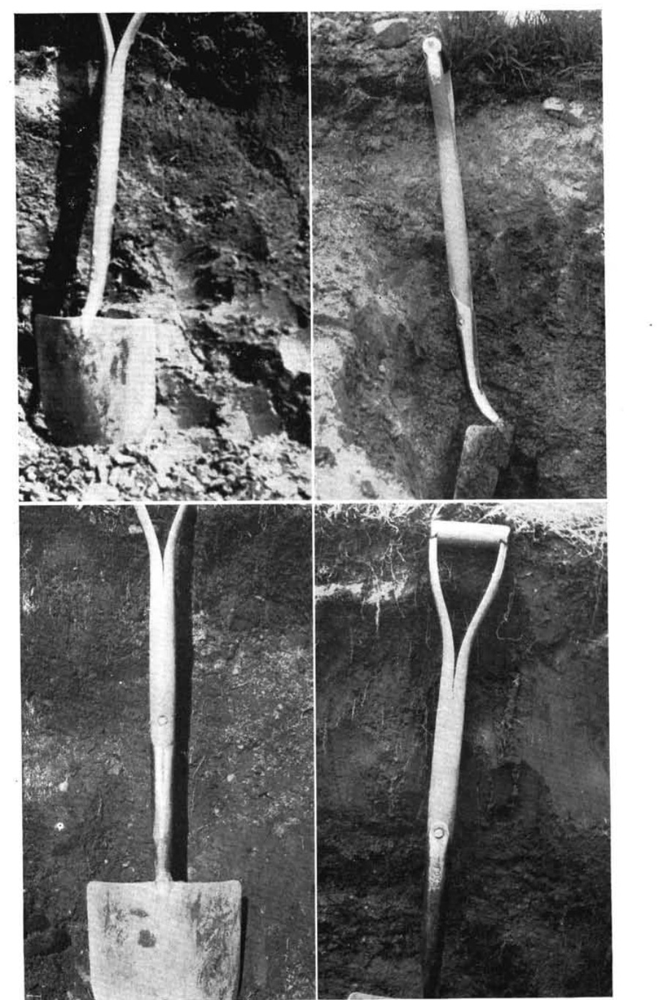
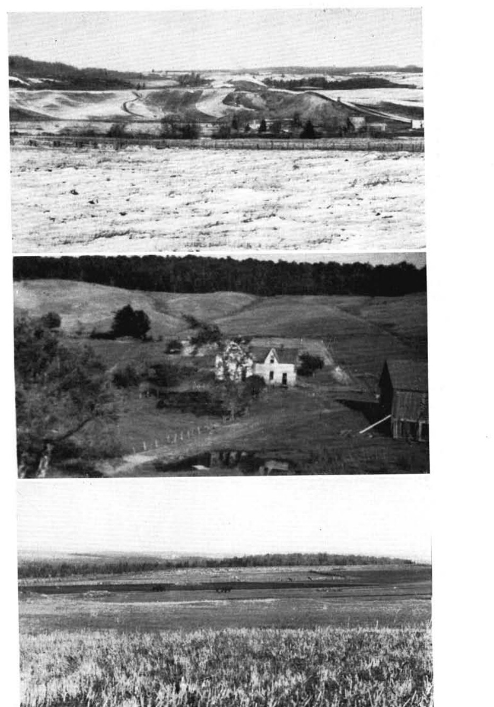
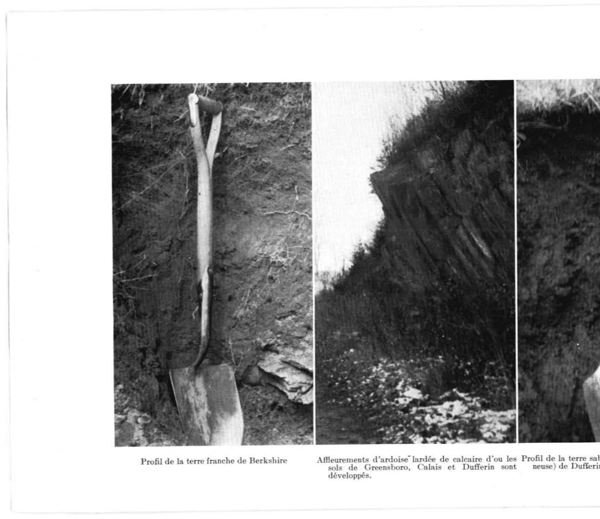

Identification & Caractéristiques Générales
La série Calais se développe sur un till morainique basal dense et compact, souvent influencé par des dépôts glaciolacustres locaux, mis en place dans les régions de plateaux et de hautes collines des Appalaches, notamment dans les secteurs sud-est de l'Estrie. Ce type de sol s'observe principalement sur les longues pentes uniformes et faiblement inclinées, généralement comprises entre 2 % et 9 %, à des altitudes souvent supérieures à 400 mètres. Le matériau parental, caractérisé par une charge modérée en fragments grossiers (graviers et cailloux) et une coloration typique verdâtre ou gris foncé attribuable au broyage de minéraux graphitiques, présente une réaction carbonatée mise en évidence par une effervescence à l'acide chlorhydrique au niveau de l'horizon C sous-jacent.
Sur le plan morphologique, le profil se caractérise en surface par une couche arable de texture loam à loam limoneux, riche en matière organique, d'une épaisseur moyenne de 14 cm, présentant une structure granulaire fine faiblement à modérément développée et une réaction très fortement acide. Le régime hydropédologique est marqué par un drainage naturel imparfait à modérément mauvais. L'infiltration de l'eau est restreinte par la compacité sous-jacente du till, ce qui génère une stagnation temporaire de l'eau de percolation malgré un égouttement de surface généralement suffisant sur les pentes. Les variations texturales incluent parfois un alourdissement vers des phases plus limoneuses ou argileuses en bas de pente ou sous influence lacustre, accompagnées d'une diminution de la pierrosité.
Sur le plan agronomique, les sols de la série Calais soutiennent la production de cultures fourragères, de céréales et de pâturages, ainsi que des peuplements forestiers dominés par l'érable à sucre, le hêtre à grandes feuilles et l'épinette. Les contraintes majeures à la mise en valeur agricole résident dans l'imperfection du drainage interne, la forte acidité nécessitant des apports réguliers de chaulage pour optimiser la fertilité chimique — caractérisée par des teneurs appréciables en phosphore total et assimilable — ainsi que la compacité du substrat qui restreint la percolation profonde. L'aménagement de ces sols requiert prioritairement l'installation d'un réseau de drainage souterrain et une gestion rigoureuse des travaux arables pour contrer les risques de compaction et préserver la stabilité structurale de l'horizon de surface.
Classification Taxonomique & Environnement Pédologique
| Ordre Pédologique | Gleysolique |
|---|---|
| Grand Groupe (SCSS) | Gleysol orthique |
| Sous-Groupe Taxonomique | Gleysol orthique |
| Famille Pédologique | Loameuse-fine, mixte sableux, neutre |
| Mode de Dépôt Parental | Morainique |
| Classe de Drainage Naturel | Imparfaitement drainé |
| Régime Thermique & Humidité | Frais / Perhumide |
Description Morphologique du Profil Type
Séquences génétiques des horizons pédologiques caractérisant le profil type représentatif de la série Calais :
Profil représentatif — Comté de Stanstead — Phase fortement ondulée
✓ Source : Comté de Stanstead — Page 31Couleur Munsell : Non précisée
Structure & Consistance : Polyédrique à granulaire
Description morphologique : Epaisse couverture de feuilles.
Couleur Munsell : Non précisée
Structure & Consistance : S'émiettant
Description morphologique : Terre franche, noire, friable; structure s'émiettant; souvent bourbeuse lorsqu'elle est mouillée, pH 6.0.
Couleur Munsell : Non précisée
Structure & Consistance : Polyédrique à granulaire
Description morphologique : Terre sablo-argileuse gris foncé à gris verdâtre; pleine de galets ou cailloux anguleux, pH 6.7.
Couleur Munsell : Non précisée
Structure & Consistance : Polyédrique à granulaire
Description morphologique : Non apparent.
Couleur Munsell : Non précisée
Structure & Consistance : Vésiculaire
Description morphologique : Terre franche à franche limoneuse, vert noirâtre ferme; mais non compacte; légèrement tachetée; laminée, structure vésiculaire; contient des morceaux de calcaire noir décomposé, pH 6.8.
Profil forestier (sous boisé) — Comté de Frontenac
✓ Source : Comté de Frontenac — Page 28Couleur Munsell : Non précisée
Structure & Consistance : Polyédrique à granulaire
Description morphologique : Litière de feuilles, de brindilles, d'herbes et de matériaux ligneux.
Couleur Munsell : 10YR 2/1, 10YR 3.5/1
Structure & Consistance : Polyédrique à granulaire
Description morphologique : Couche semi-décomposée organique noire (10 YR 2/1 h), gris très foncé à gris foncé (10 YR 3.5/1 s); limite abrupte, ondulée.
Couleur Munsell : 2.5Y 6/3, 10YR 2/1.5
Structure & Consistance : Granulaire
Description morphologique : Loam sableux humifère noir (mull moyen mésique mésotrophique mince) (10 YR 2/1.5h), gris-brun clair (2.5 Y 6/3 s); structure granulaire, très fine, faible; très friable; racines très abondantes, grossières à fines, non orientées; limite nette, ondulée; épaisseur de 4 à 12 cm; modérément acide.
Couleur Munsell : 10YR 3/2, 7.5YR 7/0
Structure & Consistance : Granulaire
Description morphologique : Loam humique très graveleux brun-gris très foncé (10 YR 3/2 h), gris clair (7.5 YR 7/0 s); structure granulaire, fine, forte et granulaire, moyenne, faible; racines très abondantes, grossières à fines, non orientées; fragments grossiers graveleux (à granules et gravillons) environ 50% en volume; limite abrupte, ondulée; épaisseur de 0 à 20 cm; peu acide.
Couleur Munsell : 5Y 6/1 (matrice), 10YR 4/6 (marbrures)
Structure & Consistance : Lamellaire
Description morphologique : Loam gris foncé (N 4/0 h), gris (5 Y 6/1 s); marbrures, assez nombreuses, petites, brun-jaune foncé (10 YR 4/6 h); structure lamellaire, très fine, modérée; friable; racines très abondantes, grossières à fines, non orientées; effervescence, très faible, au peroxyde 3-4%; limite nette, interrompue; épaisseur de 0 à 10 cm; peu acide.
Couleur Munsell : 5Y 3.5/1 (matrice), 2.5Y 7/0 (marbrures)
Structure & Consistance : Lamellaire
Description morphologique : Loam gris très foncé (5 Y 3.5/1 h), gris clair (2.5 Y 7/0 s); marbrures nombreuses, grandes, très marquées, brun-jaune (10 YR 5/8 h); structure lamellaire, très fine, très faible; friable; racines très abondantes, grossières à fines, non orientées; effervescence très faible au peroxyde 3-4%; limite nette, interrompue; épaisseur de 0 à 7 cm; neutre.
Couleur Munsell : 5Y 3.5/3 (matrice), 5Y 6/1 (marbrures)
Structure & Consistance : Polyédrique à granulaire
Description morphologique : Loam olive foncé (5 Y 3.5/3 h), gris (5 Y 6/1 s); marbrures assez nombreuses, grandes, très marquées, brun-jaune foncé (10 YR 4/6 h) et gris (2.5 Y 5/0 h); sans structure, aspect massif; friable; effervescence modérée au HCl 10%, faible; limite nette, interrompue; épaisseur de 15 à 40 cm; faiblement alcalin.
Couleur Munsell : 5Y 5/1 (matrice), 5B 4/1 (marbrures)
Structure & Consistance : Lamellaire très fine
Description morphologique : Loam gris (5 Y 5/1 h), gris clair (N 7/0 s); marbrures nombreuses, grandes, très marquées (5 B 4/1 h) et olive (5 Y 4/3 h); structure lamellaire très fine, faible et polyédrique angulaire, fine à moyenne, très faible; ferme à friable; effervescence forte au HCl 10%; limite nette, ondulée; modérément alcalin.
Profil forestier (sous boisé) — Comté de Frontenac
✓ Source : Comté de Frontenac — Page 30Couleur Munsell : 5Y 2.5/1, 5Y 4/2
Structure & Consistance : Granulaire
Description morphologique : Loam sableux grossier noir à gris très foncé (5 Y 2.5/1 h), olive (5 Y 4/2 s); structure granulaire, fine, modérée; très friable; racines très abondantes, de toutes les grosseurs, non orientées; fragments grossiers, graveleux et caillouteux ardoisiers (co-dominant) et granitique (co-dominant), environ 10% en volume; effervescence modérée au peroxyde 3-4%; limite abrupte, ondulée; épaisseur de 18 à 25 cm; faiblement acide.
Couleur Munsell : 5Y 5/3 (matrice), 5Y 6/2.5 (marbrures)
Structure & Consistance : Granulaire
Description morphologique : Loam sableux olive (5 Y 5/3 h), gris-olive clair à olive pâle (5 Y 6/2.5 s); marbrures assez nombreuses, moyennes et petites, très marquées, brun-jaune foncé à brun-jaune (10 YR 4.5/6); structure granulaire, fine, faible; très friable; racines abondantes, fines et très fines, verticales et obliques; fragments grossiers, graveleux granitiques en dominance et ardoisiers subordonnés, environ 25% en volume; effervescence très faible au peroxyde 3-4%; limite nette, ondulée; épaisseur de 6 à 9 cm; neutre.
Couleur Munsell : 5Y 4/2.5 (matrice), 5Y 5.5/3 (marbrures)
Structure & Consistance : Granulaire
Description morphologique : Loam sableux olive (5 Y 4/2.5 h) olive à olive pâle (5 Y 5.5/3 s); marbrures nombreuses, grandes, moyennes et petites, distinctes gris (5 Y 5/1 h) et très marquées brun-jaune foncé (10 YR 4/6 h); structure granulaire, fine, faible; très friable à friable; très peu de racines, fines et très fines jusqu'à 30 cm de profondeur, verticales et obliques; fragments grossiers graveleux granitiques en dominance et ardoisiers subordonnés, environ 15% en volume; effervescence faible au peroxyde 3-4%; limite graduelle, régulière; épaisseur de 7 à 13 cm; faiblement alcalin.
Couleur Munsell : 5Y 3.5/2 (matrice), 5Y 6/2 (marbrures)
Structure & Consistance : Granulaire
Description morphologique : Loam sableux gris-olive (5 Y 3.5/2 h), gris-olive clair (5 Y 6/2 s); marbrures nombreuses, grandes, moyennes et petites, très marquées, brun-jaune foncé (10 YR 4/6 h); structure granulaire, fine, modérée à forte; ferme à friable; fragments grossiers, graveleux ardoisiers en dominance et granitiques subordonnés, environ 20% en volume; effervescence faible au peroxyde 3-4%; faiblement alcalin.
Profil cultivé (agricole) — Comté de Beauce
✓ Source : Comté de Beauce — Page 60Couleur Munsell : 10YR 5/1
Structure & Consistance : Polyédrique à granulaire
Description morphologique : Loam limoneux brun gris très foncé à brun très foncé (10 YR 2,5/2 h), gris à brun gris (10 YR 5/1,5 s); granulaire, fine, faible; très friable; racines abondantes, de toutes les grosses voyageurs, non orientées; fragments grossiers, à graviers anguleux, 10 % en volume; limite nette, régulière; épaisseur de 5 à 10 cm; extrêmement acide.
Couleur Munsell : 5Y 6/2 (matrice), 10YR 8/1 (marbrures)
Structure & Consistance : Polyédrique à granulaire
Description morphologique : Loam limoneux gris brun clair (2,5 Y 6/2 h), blanc (10 YR 8/1 s); marbrures fréquentes, fines et moyennes, marquées, brun jaune (10 YR 5/6 h), jaune brun (10 YR 6/6 s); polyédrique subangulaire, fine, faible à modérée; très friable; racines peu abondantes, fines, très fines, microracines, verticales, obliques; fragments grossiers, à graviers anguleux; de 20 % à 30 % en volume; limite abrupte, ondulée; épaisseur de 14 à 18 cm; fortement acide.
Couleur Munsell : 5Y 5/4 (matrice), 5Y 7/2 (marbrures)
Structure & Consistance : Polyédrique à granulaire
Description morphologique : Loam limoneux brun olive clair (2,5 Y 5/4 h), gris clair (2,5 Y 7/2 s); marbrures nombreuses, moyennes, marquées, brun jaune foncé à brun jaune (10 YR 4,5/4 h), brun jaune clair (10 YR 6/4 s); polyédrique subangulaire, fine, modérée, friable; racines très peu abondantes, fines, très fines, microracines, verticales, obliques; fragments grossiers, à graviers anguleux, 20 % en volume; limite graduelle, ondulée; épaisseur de 7 à 23 cm; modérément acide.
Couleur Munsell : 5Y 4/4 (matrice), 5Y 6/3 (marbrures)
Structure & Consistance : Polyédrique à granulaire
Description morphologique : Loam limoneux brun olive (2,5 Y 4/4 h), gris brun clair à brun jaune clair (2,5 Y 6/3 s); marbrures fréquentes, fines, moyennes, marquées, brun jaune foncé (10 YR 4/5 h), brun olive clair (2,5 Y 5/4 s); polyédrique subangulaire fine, modérée; ferme; racines très peu abondantes, très fines, microracines, verticales, obliques; fragments grossiers, à graviers anguleux, 20 % en volume; neutre.
Profils Photographiques & Planches de Terrain
Documents iconographiques, figures pédologiques et coupes de terrain documentées dans les mémoires d'inventaire pour de la série Calais :



Propriétés Physico-Chimiques & Analyses de Laboratoire
| Horizon | Prof. limite | pH (H₂O) | M.O. % | C tot. % | N tot. % | C.E.C. (cmol/kg) | Sable % | Limon % | Argile % | P Meh3 (mg/kg) | K (cmol/kg) | Ca (cmol/kg) | MVA (g/cm³) |
|---|---|---|---|---|---|---|---|---|---|---|---|---|---|
| Ap1 | 13.0 cm | 5.8 | 4.25 | 2.46 | 0.23 | 17.0 | 38.5 | 41.4 | 20.0 | 87.5 | 0.18 | 6.16 | 1.27 |
| Ap2 | 29.0 cm | 5.97 | 3.02 | 1.75 | 0.16 | 14.5 | 40.5 | 39.7 | 19.7 | 56.2 | 0.12 | 4.96 | 1.47 |
| B | — | 6.29 | 1.06 | 0.62 | 0.08 | 9.9 | 37.5 | 41.5 | 20.9 | 19.5 | 0.11 | 3.41 | 1.65 |
Particularités Régionales, Phases & Variantes Pédologiques
Déclinaisons régionales, faciès texturaux, phases d'érosion ou de pierrosité et variantes cartographiées par étude pour de la série Calais :
| Étude Régionale | Symbole | Appellation / Phase / Variante | Différenciation avec la série type (Analyse pédologique) |
|---|---|---|---|
| Comté de Beauce | Ca |
Calais loam ou loam limoneux | Modalité modale de référence (type de base de la série). |
| Comté de Stanstead | Ca |
Calais loam | Faciès textural de surface loam (distinct du loam limoneux de référence). |
| Comté de Frontenac | Ca |
Calais loam à loam limoneux | Conforme à la série type de référence (caractéristiques texturales et drainage identiques). |
Ca* |
Calais loam à loam limoneux à surface granitique pierreuse | Conforme à la série type de référence (caractéristiques texturales et drainage identiques). |
Distribution Pédo-Paysagère & Représentativité Cartographique (Couverture PPS 2026)
- Dufferin loam ou loam limoneux (DFF) — co-occurrente dans 1007 polygone(s)
- Greensboro loam ou loam limoneux (GEB) — co-occurrente dans 983 polygone(s)
- Shenley loam ou loam limoneux (SHE) — co-occurrente dans 860 polygone(s)
Aptitudes Agronomiques, Hydropédologie & Conservation des Sols
Indicateurs Hydropédologiques & Vulnérabilité à l'Érosion (BDHP 2026)
Interprétation BDHP : Potentiel de ruissellement modérément élevé. Faible taux d'infiltration, présence d'horizons ralentissant le drainage descendant.
Classement selon l'Inventaire des Terres du Canada (ITC / CLI) : Classe 2w.
- Potentiel agricole : Terroir adapté aux cultures régionales selon la texture dominante et la régie de drainage.
- Contraintes majeures : Imparfaitement drainé. Risque d'engorgement temporaire ou d'excès d'eau printanier.
- Gestion & Aménagement : Drainage souterrain ou superficiel préconisé sur les terres planes. Chaulage et apport organique régulier selon les bilans agronomiques.
- Cultures adaptées : Grandes cultures (maïs, soya, céréales), prairies fourragères et cultures maraîchères selon le contexte géomorphologique.